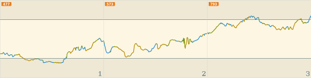
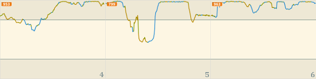
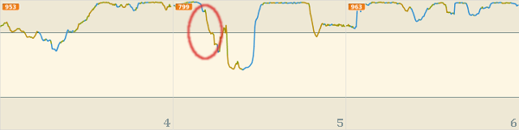

risorse | mbot cerca-luce
In controllo di mBot da mBlock il robot è stato programmato per acquisire il livello di luminosità lungo una traiettoria determinata dal pilota per mezzo della tastiera del computer. Alla luce di quell'esperienza, è possibile programmare mBot in modo che raggiunga autonomamente il luogo dove l'intensità luminosa è massima? Un comportamento del genere risulterebbe utile se il robot fosse alimentato ad energia solare: quando il livello delle batterie scende al di sotto della soglia di sicurezza il robot potrebbe mettere in atto questa strategia per ottimizzare il tempo di ricarica.
mBot è dotato di un unico sensore luminoso posto tra i due led: questo rende difficile determinare la direzione verso la quale procedere per massimizzare l'irradiazione del robot — ce ne fossero due, sarebbe sufficiente orientare il robot verso il sensore maggiormente illuminato. Ho quindi pensato di basare le scelte sulla direzione da prendere sul cambiamento di luminosità confrontando il livello di irradiazione nella posizione attuale rispetto alla precedente. La stragegia iniziale era così articolata:
1. procedi in avanti 2. se il livello di luminosità è aumentato, vai al punto 1. 3. ruota verso destra 4. se il livello di luminosità è diminuito, ruota verso sinistra 5. continua la rotazione 6. se il livello di luminosità è aumentato, vai al punto 5. 7. torna al punto 1.
Alla prova dei fatti questa procedura si è rivelata poco efficace: mBot sembrava vagare senza una meta apparente quando invece sarebbe stato lecito attendersi una preferenza per le zone più illuminate della stanza. Ho provato allora a semplificare la parte della rotazione:
1. procedi in avanti 2. se il livello di luminosità è aumentato, vai al punto 1. 3. imposta una rotazione verso destra o sinistra, a caso 4. continua la rotazione 5. se il livello di luminosità è diminuito, vai al punto 4. 6. continua la rotazione 7. se il livello di luminosità è aumentato, vai al punto 6. 8. torna al punto 1.
La modifica è marginale: prima il robot ruotava verso destra invertendo immediatamente il senso di rotazione nel caso il livello di luminosità fosse diminuito; ora prosegue nella rotazione fino a quando il livello di luminosità non aumenta, e a quel punto continua fino a quando non scende. Questa tecnica, all'apparenza equivalente a quella di partenza, si è dimostrata in realtà più robusta e meno soggetta all'instabilità intrinseca che caratterizza il sensore montato sul mio mBot.
La parte di programma che si occupa del movimento
Il progetto mBlock fa uso di alcuni blocchi personalizzati; i più semplici sono quelli che si occupano della rotazione di mBot, introdotti per rendere più compatta — e quindi più comprensibile — la sezione principale:
I blocchi per la rotazione sul posto di mBot
Il blocco che si occupa della rilevazione della misura di luminosità mostra come viene realizzato l'effetto “memoria”: dapprima il livello di luminosità acquisito precedentemente (che si trova all'interno della variabile light) viene copiato nella variabile prev-light, quindi quello attuale va a sostituire il vecchio, sempre nella variabile light. Infine, si procede con l'aggiornamento del diagramma:
Il blocco che realizza l'acquisizione del livello di luminosità
La procedura di aggiornamento del diagramma è analoga a quella già vista in controllo di mBot da mBlock, con la caratteristica cancellazione automatica della traccia una volta raggiunto il margine destro:
Il blocco per l'aggiornamento del grafico del livello di luminosità
Il programma cambia il colore della penna in funzione del tipo di movimento in atto: verde per l'avanzamento, arancio per la rotazione verso destra, azzurro per la rotazione verso sinistra. In questo modo è facile, guardando il diagramma, ricostruire la traiettoria seguita da mBot per raggiungere la sua posizione finale:
Il colore della traccia indica il tipo di movimento effettuato da mBot in quel frangente
Come si comporta il programma in un ambiente reale? La composizione sottostante mostra i primi minuti di una passeggiata del robot iniziata da una posizione in penombra (sotto il tavolo della cucina!). Dopo una lieve indecisione iniziale, il robot si muove con una certa determinazione verso la zona più luminosa della stanza:
 Il programma sembra funzionare a dovere…
Messo alla prova, il programma ha dato buona prova di sè: una volta raggiunta l'area maggiormente illuminata, il robot ha cominciato a girare su sè stesso, come si può verificare analizzando la traccia nella parte finale del quarto quadro, ove il valore di luminosità è massimo e il colore verde — che caratterizza l'avanzamento — praticamente assente. A quel punto ho oscurato di proposito il robot, esattamente in corrispondenza della caduta di luminosità evidenziata qui sotto:
Ebbene, il robot non ci ha messo molto, una volta uscito da una zona d'ombra limitrofa, a riportarsi nella regione di massima illuminazione. Il movimento continuo costituisce comunque un pericolo, perché a volte accade che il robot finisca in aree a minor luminosità — si veda ad esempio l'attenuazione verificatasi tra il quinto e sesto quadro. Varrebbe forse la pena di arrestare il robot una volta raggiunto un livello di illuminazione ottimale. Il filmato sottostante mostra mBot entrare in una zona d'ombra adiacente a quella di massima luminosità per uscirne subito dopo:
Il programma «cerca-luce» è scaricabile qui.
Sarebbe stato praticamente impossibile validare questo progetto senza la possibilità di visualizzare a schermo i dati di intensità luminosa rilevati da mBot. Non disponendo di un esposimetro non avrei mai avuto la certezza che il robot stesse effettivamente seguendo una traiettoria a luminosità crescente. Avrei magari potuto ricorrere a qualche espediente come per esempio far emettere di tanto in tanto un suono a mBot di altezza proporzionale all'ultima lettura del sensore. Si sarebbe comunque trattato di una misura indiretta, per di più qualitativa: nulla di comparabile alla precisione ottenuta tracciando l'andamento del livello di luminosità su un diagramma cartesiano.
Pagina modificata il 01/06/2018